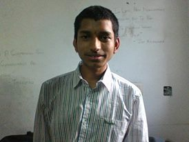

ABOUT MY FAMILY
INTRODUCTION
The table gives a brief overview of my family members.
click on the photos of my family members to know briefly about them.
| MYSELF | P.KRISHNA CHAITANYA |  |
FATHER
My father's name is P.Vijaya Kishore Tilak.He was born in the year 1964.He was born and brought up in Vijayanagaram,my home town which is 45km away from Visakhapatnam. He completed his studies till graduation in my hometown and completed his M.sc Geology in Andhra University in Visakhapatnam.He is working in Life Insurasnce Corporation of India of Visakhapatnam currently as Administrative Officer(A.O) in the New Business department.He is a very patient and calm persons.In fact one of the few persons,who have a long rope of patience.I really like this quality of him and would like to develop it.He serves all my family members and relatives naturally and effortlessly.I sometimes feel that it is his second nature to do so.
MOTHER
My mother's name is P.Anuradha.She was born in 1973 in my home-town of vijayanagaram.She has also comleted her studies uptil graduation in the same place and got married after that in the year 1997.She is a home-maker and she does the most valuable work of all the people in my house and she is the one who does most amount of work.She is also interested in tailoring and other designing works of dresses.She gets up very early on almost every day remarkably easily and helped me to cultivate this habit and even now sometimes she calls and reminds me if dont get up.
SISTER
My sister's name is P.Krishna Sahithi.She was born in 1999 in Vijayanagaram.She,like me has studied in a variety of schools as we have travelled a lot during my childhood.She is an expert in cooking and comes up with new things all the time.She is also good at art and she was the one who did my Art assignments at school.Unfortunately,I have to do my Folk-art works by myself in here at III-T.She is currently doing her Intermediate in Ascent Jr. College in Visakhapatnam.
CONCLUSION
All in all I have a very nice and loving family,who care a lot for me.I also love all of them.As an English saying says,you get to know the value of things only when you are away from them. My value and love for family has increased a lot after I have come to the hostel.So,all the things are in a sense good for us,it all depends on the way you see and percieve things. This is about my family.I hope everyone has a nice and cute family as this and hope you enjoyed reading this page.